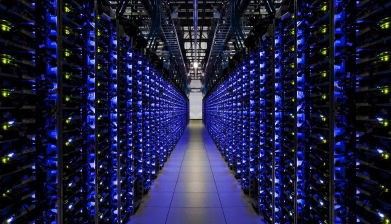

From analyzing the data in the class-built database about our own social media activity, we realized that a lot of the material we store online is not important or necessary to keep. Images we share online on a daily basis surely has an impact on a larger scale, in terms of energy consumption. Energy consumption in the world that we need to think about now.
This project is about finding solutions to this growing problem.
 Datacenters need a lot of power to store files and information online. By 2025, they are said to consume 1/5 of Earth's Power. This seems like a time to raise awareness about this growing issue and try to find solutions or alternatives for it.
Sources+images?.
How we want to achieve it : algorithm and plug-in, the reacrion we want from audience (prise de concience sur l'utilisation des données en ligne, instagram, clouds etc... qui participent à cette utilisation d'énergie en masse qui pose problème)